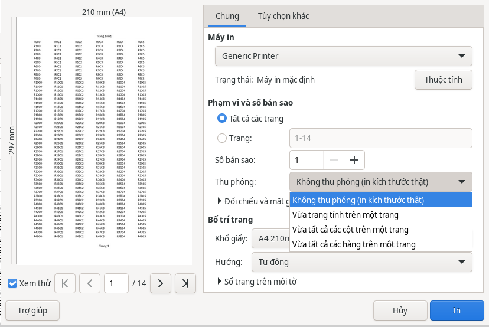

Bảng tính
Bảng tính: in vừa trang
Bảng tính rộng hơn khổ giấy thường bị in tách cột sang trang khác. Chọn để mọi cột nằm trên cùng một trang theo chiều ngang; số trang theo chiều dọc tự tăng theo số hàng.
Chọn thu phóng ngay khi in
- Trong HST Sheets, chọn hoặc nhấn Ctrl+P.
- Ở ô (ngay dưới ), chọn một trong các mục bên dưới.
- Bản xem trước bên trái và số trang cập nhật ngay. Kiểm tra lại rồi bấm .

- : in đúng cỡ chữ và cỡ ô như trên màn hình (100%).
- : thu nhỏ để cả trang tính nằm gọn trên một trang giấy.
- : thu nhỏ theo chiều ngang cho vừa một trang; bảng dài vẫn in nhiều trang theo chiều dọc. Đây là lựa chọn hay dùng nhất cho bảng lương, danh sách.
- : thu nhỏ theo chiều dọc cho vừa một trang; bảng rộng vẫn in nhiều trang theo chiều ngang.
- : chỉ có khi trang tính đang dùng tỷ lệ khác (ví dụ 75% hoặc vừa 2 trang). Chọn mục này để giữ lại thiết lập đó.
Chữ trong bản in nhỏ đi khi bảng càng rộng. Nếu chữ quá nhỏ, hãy đổi giấy sang ngang hoặc ẩn bớt cột không cần in.
Các chỗ khác có cùng lựa chọn
- Thẻ , nhóm : nút .
- Khi xem trước bản in: nút trên thanh công cụ xem trước.
- Thanh trình đơn: .
- Nhấn Alt+Q rồi gõ hoặc .
mở hộp thoại kiểu trang ở thẻ , nơi đặt tỷ lệ phần trăm, số trang hoặc số trang rộng × cao tùy ý.
Áp dụng cho trang tính nào
- Thu phóng áp dụng cho các trang tính đang chọn (trong hộp thoại : các trang tính sẽ được in). Các trang tính khác giữ nguyên.
- Nếu một trang tính dùng chung kiểu trang với trang tính khác, HST Sheets tạo cho nó một kiểu trang riêng tên kèm tên trang tính, để không làm đổi bản in của trang tính kia.
- Lựa chọn được lưu cùng tệp (.xlsx và .ods) và dùng cả khi xuất PDF.
- Muốn trở lại như cũ, nhấn Ctrl+Z (hoàn tác ).